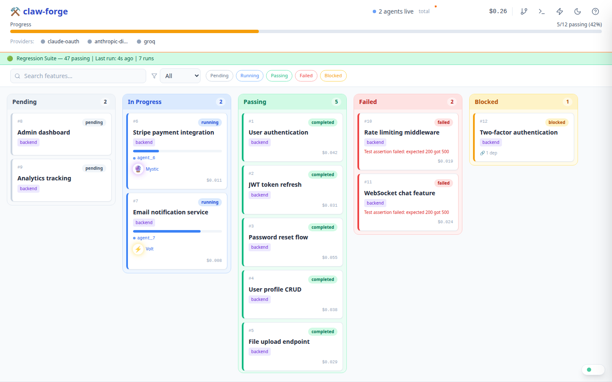

Getting Started
Everything you need to go from zero to running autonomous coding agents.
We use uv for fast, isolated installation. It puts the claw-forge command on your PATH without polluting your system Python.
pip install uv
uv tool install claw-forge
claw-forge --versionpip install pipx
pipx install claw-forge
claw-forge --versionpip install claw-forge
claw-forge --versionclaw-forge ui) requires Node.js 18+. Install from nodejs.org if you want the visual board.
claw-forge reads credentials from environment variables. Copy the example file and fill in your keys:
cp .env.example .env
# Edit .env with your editorThe minimum you need to get started is one of the following:
# Run claude login once — claw-forge picks it up automatically.
# No env vars needed for OAuth. Token is read from:
# ~/.claude/.credentials.json
claude login# .env
ANTHROPIC_API_KEY_1=sk-ant-api03-...# .env — Anthropic-compat proxy
PROXY_1_API_KEY=your-proxy-key
PROXY_1_BASE_URL=https://your-proxy.example.com/v1
PROXY_1_MODEL=claude-sonnet-4-6claw-forge automatically loads .env from the same directory as claw-forge.yaml — no export or source needed.
.env.example covering every provider: Anthropic, proxies (with base_url + model), AWS Bedrock, Azure, Vertex AI, Groq, Cerebras, and Ollama. Copy it and fill in only what you use — unset vars produce a warning but won't crash the run.
Create claw-forge.yaml in your project root. Every credential is read from env vars — never hardcode keys.
pool:
strategy: priority
max_retries: 3
providers:
claude-oauth:
type: anthropic_oauth
priority: 1
# Token auto-read from ~/.claude/.credentials.jsonpool:
strategy: priority
max_retries: 3
providers:
claude-oauth:
type: anthropic_oauth
priority: 1
anthropic-primary:
type: anthropic
api_key: ${ANTHROPIC_API_KEY_1}
priority: 2
groq-backup:
type: openai_compat
api_key: ${GROQ_API_KEY}
base_url: https://api.groq.com/openai/v1
model: llama-3.3-70b-versatile
priority: 3pool:
strategy: priority
max_retries: 3
providers:
# Anthropic-format proxy (x-api-key + /v1/messages)
anthropic-proxy-1:
type: anthropic_compat
api_key: ${PROXY_1_API_KEY}
base_url: ${PROXY_1_BASE_URL}
model: ${PROXY_1_MODEL}
priority: 1
anthropic-proxy-2:
type: anthropic_compat
api_key: ${PROXY_2_API_KEY}
base_url: ${PROXY_2_BASE_URL}
model: ${PROXY_2_MODEL}
priority: 2pool:
strategy: priority
max_retries: 3
providers:
# Ollama — local model, zero cost
local-ollama:
type: ollama
base_url: ${OLLAMA_BASE_URL}
model: ${OLLAMA_MODEL}
priority: 1
cost_per_mtok_input: 0.0
cost_per_mtok_output: 0.0
# .env:
# OLLAMA_BASE_URL=http://localhost:11434
# OLLAMA_MODEL=qwen2.5-coderThe pool manager routes each request through providers in priority order, skipping any that are rate-limited or have open circuit breakers.
| Field | Required | Description |
|---|---|---|
| type | required | anthropic · anthropic_compat · anthropic_oauth · openai_compat · bedrock · azure · vertex · ollama |
| priority | required | Lower = tried first. Providers with the same priority compete via the routing strategy. |
| api_key | optional | Use ${ENV_VAR} syntax. Omit for OAuth or no-auth proxies. |
| base_url | optional | Required for proxy and Ollama types. Use ${ENV_VAR}. |
| model | optional | Default model for this provider. Use ${ENV_VAR}. Falls back to the request model if unset. |
| model_map | optional | Map model names for proxies that use different identifiers. |
| cost_per_mtok_input | optional | USD per million input tokens. Used for cost tracking in the Kanban UI. |
The spec is a plain text file that describes what you want to build. The initializer agent reads it and breaks it into atomic, dependency-ordered tasks that agents can implement in parallel.
You have three ways to create a spec:
Best control. Use the format below.
Interactive. Claude walks you through it conversationally.
Paste a PRD, Notion doc, or README — Claude extracts the spec.
app_spec.txt yourselfThe format is human-readable and intentionally flexible. The key thing is to be specific about acceptance criteria — vague features produce vague code.
Depends on: for hard dependencies. Features with no dependencies run in parallel in Wave 1./expand-project once the first wave is running./create-specOpen Claude Code in your project directory and type /create-spec. Claude will walk you through the project conversationally — asking about your stack, features, providers, and concurrency — then write both app_spec.txt and claw-forge.yaml for you.
# Open your project in Claude Code, then type:
/create-specIf you already have a PRD, a Notion export, or a detailed README, paste its contents into Claude and ask:
app_spec.txt. Break each requirement into a concrete feature with acceptance criteria and dependencies."
The init command runs the initializer agent — it reads your spec, analyzes the project directory, and creates a dependency-ordered task graph in the state database.
claw-forge init task-manager-api --spec app_spec.txtThe initializer also writes .claw-forge/session_manifest.json — a pre-computed context blob that every subsequent agent session loads at start. This eliminates cold-start: agents don't re-analyse the project from scratch each time.
init again on an existing project will add new tasks — it won't delete existing ones. Use /expand-project to add features to a running session instead.
You can inspect it any time:
cat .claw-forge/session_manifest.jsonStart the harness. The dispatcher executes features in dependency-ordered waves — features with no unsatisfied dependencies run in parallel up to --concurrency.
claw-forge run task-manager-api --concurrency 3The state service runs automatically on port 8888. Open http://localhost:8888/docs to explore the REST API, or use the Kanban UI (next step).
| --concurrency N | Max parallel agents (default: 3) | |
| --model MODEL | Override the default model | |
| --config FILE | Use a different claw-forge.yaml | |
| --yolo | Max speed, no approval pauses (see YOLO mode) |
claw-forge ships a React Kanban board that shows real-time agent progress, provider health, and cost. Launch it with one command:
claw-forge ui --session abc-123-defThe board opens automatically in your browser:

What you'll see:
claw-forge ui --port 3000 # custom port
claw-forge ui --no-open # don't auto-open browser
claw-forge ui --state-port 9000 # different state service portYou can also open the board manually at any time at http://localhost:5173/?session=<uuid>.
Once your first batch of features is running (or done), add more without restarting. There are two ways:
/expand-project slash commandOpen Claude Code in your project directory and type /expand-project. Claude will list the current features, ask what you want to add, and POST them to the state service atomically.
/expand-projectapp_spec.txt and re-initAdd new entries to the bottom of your spec file and run init again. Only new features (those not already in the DB) will be created.
# Append to app_spec.txt, then:
claw-forge init task-manager-api --spec app_spec.txtYOLO mode enables three things at once:
claw-forge run task-manager-api --yoloPause a running session gracefully — in-flight agents finish their current task, then no new ones start. Resume picks up exactly where it stopped.
# Pause (drain mode — active agents complete, no new ones start)
claw-forge pause abc-123-def
# Resume
claw-forge resume abc-123-defIf an agent has a question it can't answer on its own (a missing env var, an ambiguous requirement), it sets the task to needs_human and waits. Use claw-forge input to unblock it:
claw-forge input abc-123-defChoose the workflow that matches your situation. Each one chains commands in the right order.
claw-forge init → /create-spec → claw-forge run → /check-code → /checkpoint → /review-prExample: Building "TaskFlow API" (FastAPI + SQLite)
# 1. Scaffold project
mkdir taskflow-api && cd taskflow-api && git init
claw-forge init
# 2. Create spec interactively (in Claude Code)
# Type: /create-spec
# Claude asks about features, tech stack, DB schema
# Writes: app_spec.txt + claw-forge.yaml
# 3. Initialize with spec
claw-forge init --spec app_spec.txt --concurrency 5
# 4. Run agents (opens 5 parallel coding agents)
claw-forge state &
claw-forge run --concurrency 5
# 5. Verify (in Claude Code)
# /check-code → ruff + mypy + pytest
# /checkpoint → git commit + state snapshot
# /review-pr → structured code reviewclaw-forge analyze → /create-spec → claw-forge add → claw-forge runExample: Adding Stripe payments to an existing FastAPI app
# 1. Analyze existing codebase (creates brownfield_manifest.json)
claw-forge analyze
# 2. Create brownfield spec (in Claude Code)
# Type: /create-spec
# Claude auto-detects brownfield mode from manifest
# Asks: what to add, constraints, integration points
# Writes: additions_spec.xml
# 3. Add features
claw-forge add --spec additions_spec.xml
# 4. Run agents
claw-forge run --concurrency 3
# 5. Verify
# /check-code (71 tests: 59 original + 12 new, all passing)/create-bug-report → claw-forge fix → /check-code → /review-prExample: Fixing "password reset fails for uppercase emails"
# 1. Create bug report (in Claude Code)
# Type: /create-bug-report
# Claude guides you through 6 phases:
# symptoms → reproduction → expected vs actual → scope → write report → fix
# Writes: bug_report.md
# 2. Run fix (or let /create-bug-report trigger it)
claw-forge fix --report bug_report.md
# Agent does:
# Phase 1 (RED): Write test_password_reset_uppercase_email → FAILS ✓
# Phase 2 (GREEN): Fix auth/service.py → .lower() on email lookup → PASSES ✓
# Phase 3 (REFACTOR): Run full suite → 72 passed, 0 failed ✓
# 3. Verify and push
# /check-code → /review-pr → git pushclaw-forge run --concurrency 5 → claw-forge status → /pool-status → /checkpointExample: Building 50 features with 5 concurrent agents
# Three terminals:
claw-forge state & # Terminal 1: state service
claw-forge run --concurrency 5 # Terminal 2: agents
claw-forge ui # Terminal 3: Kanban board
# Monitor mid-sprint:
claw-forge status # Phase progress, blocked features, cost
# /pool-status # Provider health, RPM, circuit breakers
# Handle blocked features:
claw-forge input saas-platform # Answer agent questions interactively
# Save progress at milestones:
# /checkpoint # Git commit + state snapshot--concurrency 3 to verify your spec, then scale up.
claw-forge status → claw-forge run → /expand-projectExample: Laptop shut down mid-sprint (28/50 features done)
# 1. Check what happened
claw-forge status
# Shows: 28 passing, 5 interrupted, 17 pending
# 2. Resume — interrupted features reset to pending automatically
claw-forge state &
claw-forge run --concurrency 5
# "Resuming session: 28/50 passing, 22 remaining"
# 3. Optionally add more features mid-run (in Claude Code)
# Type: /expand-project
# Claude lists current features, asks what to add, POSTs atomicallyclaw-forge run again.
Start here
│
├── Building something new?
│ └── claw-forge init → /create-spec → claw-forge run
│
├── Adding features to existing code?
│ └── claw-forge analyze → /create-spec → claw-forge add → claw-forge run
│
├── Fixing a bug?
│ └── /create-bug-report → claw-forge fix
│
├── Checking project health?
│ ├── Code quality → /check-code
│ ├── Feature progress → claw-forge status
│ └── Provider health → /pool-status
│
├── Saving progress?
│ └── /checkpoint → /review-pr → git push
│
├── Resuming after a break?
│ └── claw-forge status → claw-forge run
│
└── Adding features mid-run?
└── /expand-project